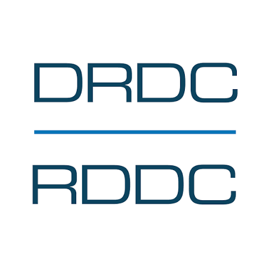
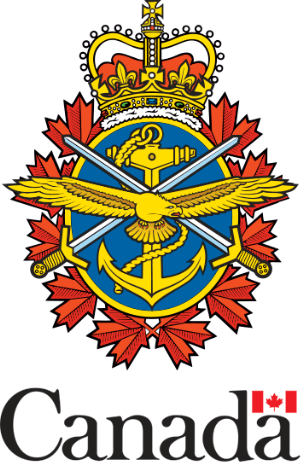
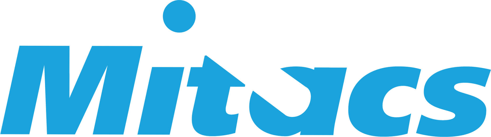

Integrated architecture for 6G and beyond
System-level integration of space, stratospheric, aerial, and terrestrial segments into one coherent network of networks, including net-zero, sustainable, and resilient designs.
Connecting Canada from the Sky
Led by Chancellor's Professor Halim Yanikomeroglu, the Carleton-NTN Lab explores the future of 6G and beyond through integrated terrestrial and non-terrestrial networks, spanning satellites, HAPS, and aerial nodes.
Tomorrow's connectivity will not come from a single layer. It will be stitched together vertically: terrestrial cellular on the ground, uncrewed aerial nodes overhead, high-altitude platform stations (HAPS) in the stratosphere, and mega-constellations of satellites in low-Earth orbit, all cooperating as one network.
Founded in 2024 as Canada's first dedicated non-terrestrial networks lab, the Carleton-NTN Lab works across all three NTN layers, aerial (UAVs), near-space (HAPS), and space (satellites), as well as the terrestrial systems they extend. The lab is now growing into a full research centre.
Our goal is practical: make ubiquitous, resilient, and sustainable connectivity real, close the digital divide, and keep Canada among the leaders of the contemporary NTN paradigm.
"NTN is not just another important research area; rather, NTN has essential and even existential importance for Canada."
Halim Yanikomeroglu · Founding Director
From the terrestrial radio access network to satellites in orbit, the lab studies every altitude of the network, and the architecture, physical layer, and intelligence that connect them.
High Altitude Platform Stations float in the stratosphere as large, energy-autonomous base stations that bridge satellites and the ground. The lab's director is recognized as the world's leading academic on HAPS, with work spanning vision and framework surveys, hemispherical antenna arrays, HAPS-assisted cell-free massive MIMO, RIS, ISAC, and public-safety connectivity.
System-level integration of space, stratospheric, aerial, and terrestrial segments into one coherent network of networks, including net-zero, sustainable, and resilient designs.
Deep and multi-agent reinforcement learning, graph and quantum neural networks, LLM-driven control, and real-time, dynamic, personalized network slicing.
Power and code-domain NOMA, faster-than-Nyquist (FTN) signaling, reconfigurable intelligent surfaces (RIS), and new 6G waveforms.
About 750 peer-reviewed papers, including 365 across 33 different IEEE journals, plus 57 magazine articles. A selection of recent results below; each card opens the paper on Google Scholar. Filter by theme.
36 journal and 11 conference papers are currently under review. A glimpse:
Agenda-setting articles in the field's flagship magazines:
Full record: Google Scholar dblp Full publication list
23 current members and more than 180 researchers trained over the years: PhD and MASc students, postdoctoral fellows, research associates, and visiting scholars.
Chancellor's Professor · Systems & Computer Engineering, Carleton University
An acclaimed engineer, inventor, and educator, recognized as the world's leading academic on HAPS and among the few experts contributing across all three NTN layers. FIEEE · FEIC · FCAE · FWWRF · FAAIA · P.Eng.
Carleton-NTN Lab Manager (since 2026)
Professor, Polytechnique Montréal
Ideas from the lab don't only get cited. They get standardized, patented, and bought by industry. A few landmark contributions:
The lab championed the aerial base-station concept (IEEE ICC 2015, London). Its ICC 2016 paper became the most-cited ICC 2016 paper and the third most-cited ICC paper since 2000, and the concept was adopted in 3GPP 5G Release 17.
Among the first to propose relaying for cellular networks (2002). A follow-up paper drew more than 2,000 citations and was cited in 127 patents; a Nortel-origin relaying patent was later purchased by Apple. Relaying entered 3GPP 4G Release 10.
A distributed-MIMO LEO architecture (US patent 12,143,177 B2) lets a phone link to dozens of satellites at once. MDA Space purchased the innovation and patent from Carleton in 2024, a rare technology transfer that earned the inaugural Carleton IP Impact Award.
The lab has authored the most papers in the literature on HAPS networks, stratospheric platforms expected to see mass deployment in the 2035 to 2050 horizon.
A CAD $13.5M infrastructure project (about CAD $5M from the Canada Foundation for Innovation), co-led with Prof. Gunes Karabulut Kurt of Polytechnique Montréal. It spans about 10 researchers across five institutions (Carleton, Polytechnique Montréal, University of Ottawa, NRC, and CRC), working on reliable connectivity between non-terrestrial and terrestrial networks and on cost-effective large-scale deployment.




Former lab members are now at Ericsson, Huawei, Telesat, and Nokia. Telesat alone hired four of the group's PhDs in two years.
Defences, papers, seminars, workshops, and milestones, shared with the community under #CarletonNTNLab.
Celebrating the degrees of Hongzhao Zheng (PhD), Amin Farajzadeh (PhD), and Ryan Dempsey (MASc), with new roles at RMC, the University of Ottawa, and DRDC.
Arguing that AI and NTN have grown too substantial to be called merely "supplementary" to 6G, plus a panel on LLMs and agentic AI in wireless.
A virtual Carleton-NTN seminar, "The Future of Global Intelligence: Orchestrating AI and Quantum Technologies in NTN."
Final workshop at MDA Space, Montréal, "From Simulator to Innovation Accelerator." Sponsored by Carleton, NRC, MDA Space, DRDC, and Mitacs.
"Green traffic engineering for satellite networks using segment routing flexible algorithm," PhD research of Jintao Liang, within the Optical SatCom Consortium Canada.
"Non-Terrestrial Networks (NTN): Direct-to-X in 6G Era and Beyond."
Organized and co-moderated by Afsoon Alidadi Shamsabadi and Halim Yanikomeroglu, with panelists from Medipol, Karabük/TUSAŞ, KTH, and Plan-S.
"Towards Self-Evolving Non-Terrestrial Networks via Federated Learning," arguing a HAPS-empowered access network (about 20 km) is a strong fit for federated learning.
Keynotes, Carleton presentations, a 5G hardware demo, and a LEO mega-constellation testbed demonstration.
More than 30 members, students, postdocs, visiting scholars, and an intern, at the lab's annual gathering.
We partner with industry, government, and academia, and we welcome prospective students, postdocs, and visiting researchers who want to shape the non-terrestrial networks of the 2030s.